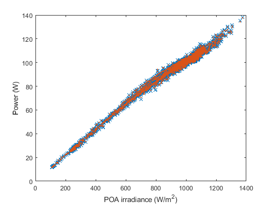

pvl_huld_parameter_estimation
PVL_HULD_PARAMETER_ESTIMATION estimates parameters for the Huld module performance model
Contents
Syntax
Model = pvl_huld_parameter_estimation(Pmp, Ee, Tm)
Description
pvl_huld_parameter_estimation returns parameters for the Huld module performance model [1]. The estimation uses robust regression to fit the Huld model, a polynomial in Tm and log(Ee), to Pmp.
Inputs
- Pmp - a N x 1 vector of power (W) at the maximum power point.
- Ee - a N x 1 vector of effective irradiance (suns).
- Tm - a N x 1 vector of module (not cell) temperature (C).
Output
- Model - a structure containing the model parameters:
- Model.Pmp0 - estimated Pmp at STC.
- Model.k - a vector of length 6 containing the coefficients k1 through k6.
Example
clearvars % load IV curve data for a 36 cell Mitsubishi cSi module load 'Desoto_demo.mat' % Extract Pmp, Ee, and Tm data. Actual data give cell temperature Tc, not % Tm, but here we'll use Tc as if it is Tm to illustrate the parameter estimation. Ee = [IVCurves.Ee]'/1000; Tm = [IVCurves.Tc]'; Pmp = [IVCurves.Imp]'.*[IVCurves.Vmp]'; Model = pvl_huld_parameter_estimation(Pmp, Ee, Tm); pPmp = pvl_huld(Model,Ee,Tm); figure plot(Ee*1000,Pmp,'x') hold all plot(Ee*1000,pPmp,'.') xlabel('POA irradiance (W/m^2)'); ylabel('Power (W)')
Reference
[1] A power-rating model for crystalline silicon PV modules, T. Huld, G. Friesen, A. Skoczek, R. Kenny, T. Sample, M. Field, E. Dunlop, Solar Energy Materials and Solar Cells 95(2011), pp 3359-3369.